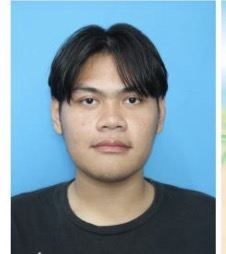

👤
ข้อมูลเบื้องต้น
ชื่อ–นามสกุล: นายธนวัฒน์ จงสูงเนิน
วันเกิด: 25 ธันวาคม 2005
ผู้ที่สนใจด้านเทคโนโลยีและการพัฒนาเว็บไซต์ พร้อมเรียนรู้สิ่งใหม่ ๆ และนำความรู้ไปต่อยอดเป็นผลงานจริง

ชื่อ–นามสกุล: นายธนวัฒน์ จงสูงเนิน
วันเกิด: 25 ธันวาคม 2005
พัฒนาทักษะด้านเว็บไซต์และเทคโนโลยีอย่างต่อเนื่อง ฝึกฝนการแก้ปัญหา และสร้างผลงานที่ใช้งานได้จริงเพื่อเติบโตในสายงานไอที
ได้เรียนรู้บรรยากาศการทำงานในร้านด้านไอที และการทำงานร่วมกับผู้อื่นในสถานที่ทำงานจริง
ฝึกประสบการณ์การทำงานภายในศูนย์ข่าวสารของวิทยาลัย เพื่อเรียนรู้กระบวนการทำงานและการประสานงาน
โปรเจกต์จบที่พัฒนาเว็บไซต์สำหรับการเติมเกม เป็นผลงานที่นำความรู้ด้านการทำเว็บไซต์มาประยุกต์ใช้ในการสร้างโปรเจกต์
ขอบคุณที่เข้ามาเยี่ยมชม Resume และ Portfolio ของผม หวังว่าจะได้มีโอกาสนำความรู้และความตั้งใจไปสร้างสรรค์ผลงานดี ๆ ในอนาคต
↑ กลับขึ้นด้านบน